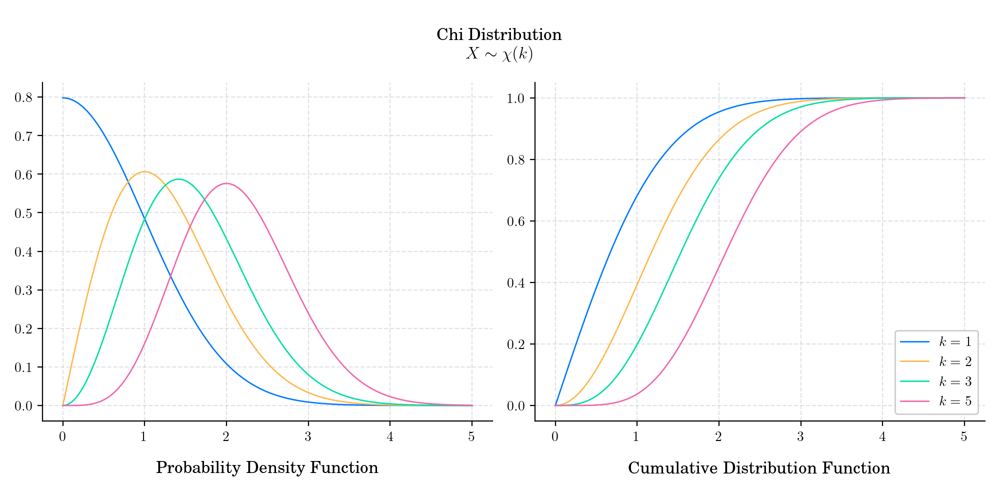

Note
Go to the end to download the full example code.
Day 15 : Chi#
/home/runner/work/advent-calendar-2023/advent-calendar-2023/examples/plot_advent_15_Chi.py:21: SyntaxWarning: invalid escape sequence '\c'
title: str = f"\n Chi Distribution \n $X \\sim \chi (k)$"
# Author: Dialid Santiago <d.santiago@outlook.com>
# License: MIT
# Description: Advent Calendar 2023
import matplotlib.pyplot as plt
from matplotlib.gridspec import GridSpec
from scipy.stats import chi
import numpy as np
plt.style.use("https://raw.githubusercontent.com/quantgirluk/matplotlib-stylesheets/main/quant-pastel-light.mplstyle")
title: str = f"\n Chi Distribution \n $X \\sim \chi (k)$"
fig = plt.figure(figsize=(10, 5), dpi=200)
gs = GridSpec(1, 4, wspace=0.5)
ax1 = fig.add_subplot(gs[:2])
ax2 = fig.add_subplot(gs[2:])
x = np.linspace(0., 5., 1000)
params = [1, 2, 3, 5]
for k in params:
rv = chi(k)
ax1.plot(x, rv.pdf(x), label=f"$k ={k}$")
ax2.plot(x, rv.cdf(x), label=f"$k={k}$")
ax1.set_title(r'Probability Density Function', y=-0.18)
ax2.legend(loc="lower right", frameon=True, facecolor='white', framealpha=1)
ax2.set_title('Cumulative Distribution Function', y=-0.18)
fig.suptitle(title)
gs.tight_layout(fig)
# fig.savefig('15_Chi')
plt.show()
Total running time of the script: (0 minutes 0.513 seconds)